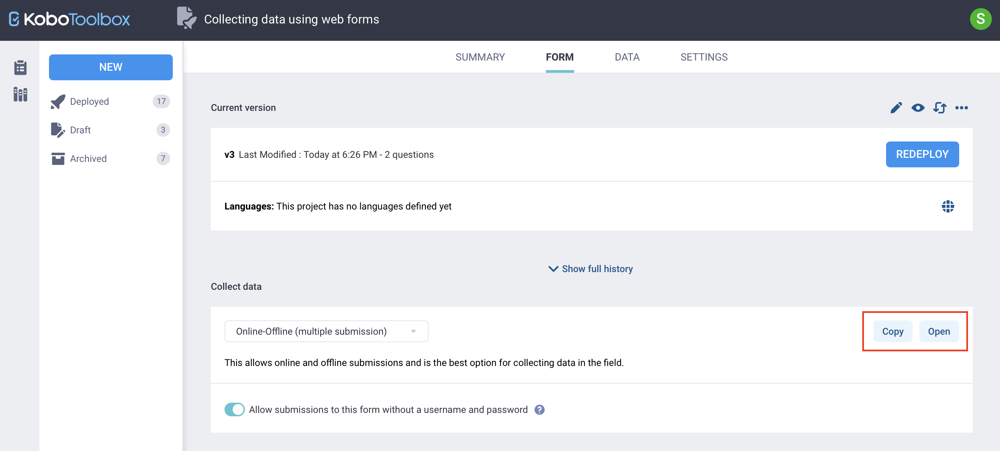
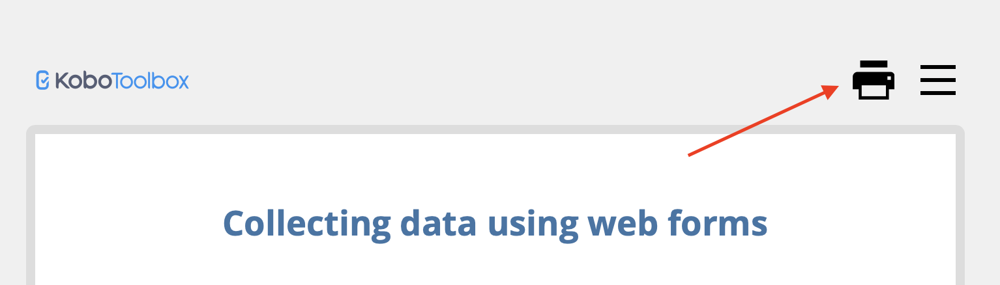
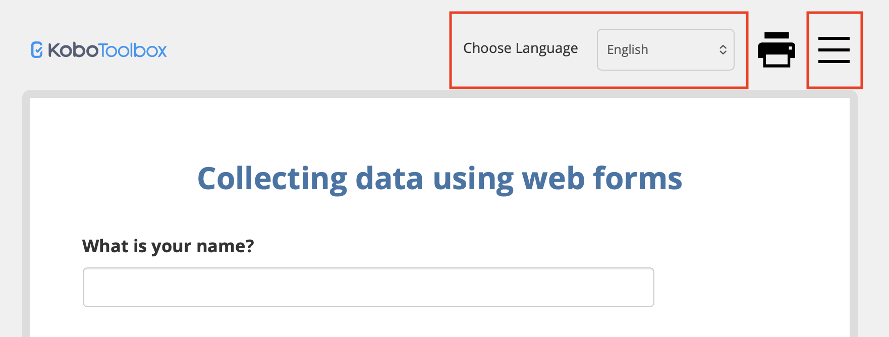
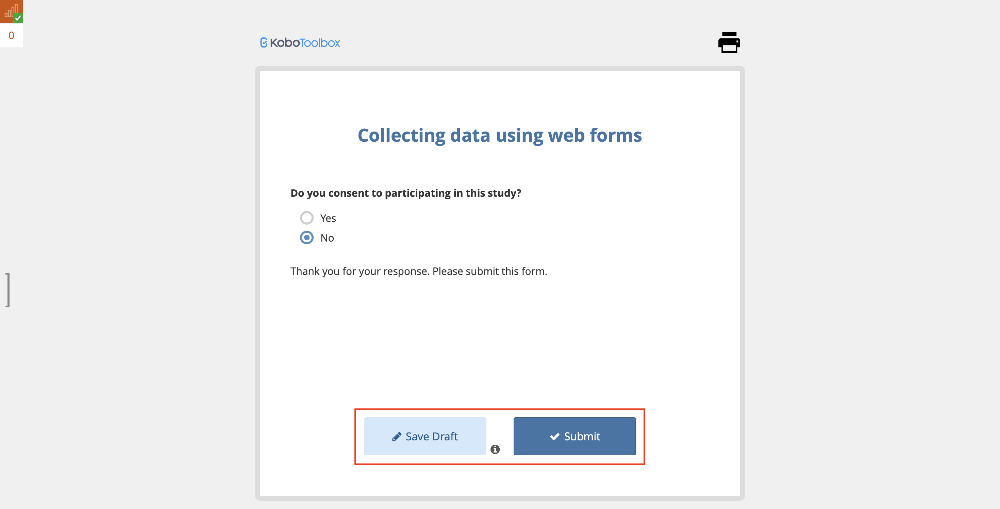
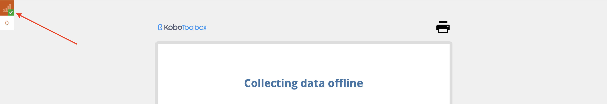

Search the knowledge base, browse our resources, and visit our forum for more detailed information
Last updated: 23 Apr 2026
KoboToolbox web forms let you collect data directly in a web browser, without installing an app. They are browser-based versions of your form that you can use to preview and test your questionnaire or collect live data on phones, tablets, and computers.
Web forms work on most modern devices, including Android devices, iPhones, iPads, laptops, and desktop computers. They are especially useful in projects where respondents complete a form through a shared link, where the data collection team uses different types of devices, or where you want to enter data on a computer instead of through an app.
Web forms also support offline data collection once the form has been opened and cached in the browser. They support all form logic set up in KoboToolbox, including skip logic and validation rules, and their appearance can be customized through different web form themes.
Note: KoboToolbox web forms were previously powered by Enketo, which is why they used to be called Enketo web forms in older documentation.
This article covers the following:
Sharing KoboToolbox web forms for data collection
Choosing the right web form mode
Collecting data and saving drafts in the browser
Using web forms offline
Customizing web form links for specific use cases
Troubleshooting common issues
Once your project is ready for data collection, you can easily share a link with respondents or data collectors to input data.
To share a link with respondents:
Open the FORM page and ensure your form has been deployed.
Under the Collect data pane, click COPY to copy the link and share it with data collectors or respondents.
You can also click OPEN to launch the form in a new browser tab.

By default, deployed projects require users to sign in before they can open a web form or submit data.
To keep authentication required, share the project with specific KoboToolbox users and give them Add submissions permission.
To allow anyone with the link to submit data without a username and password, you can disable the authentication requirement in the Collect data pane by toggling the “Allow submissions to this form to this form without a username and password” option.
To learn more about form sharing permissions, see Sharing projects with project-level settings and Sharing projects with user-level permissions.
KoboToolbox provides several web form link options under the Collect data section. These options affect the link you open or share, but they do not change the form itself.

Available web form modes include:
Data collection mode |
Description |
|---|---|
Online-Offline (multiple submission) |
Allows data collection online or offline and supports multiple submissions from the same device. |
Online-Only (multiple submissions) |
Supports multiple submissions from the same device, but requires an internet connection for use. |
Online-Only (single submission) |
Allows one submission at a time from the same device and can be used with a redirect link after submission. Users are not prevented from reopening the link to submit data again. |
Online-only (once per respondent) |
Prevents the same user on the same browser and device from submitting more than once. |
Embeddable web form code |
Provides HTML code to embed the form on your own website. |
View only |
Opens the form for previewing and testing without allowing submissions. |
You can also print a web form to share it during form development or use it for paper-based data collection. To do so:
Open your web form.
Click the printer button in the top right corner.
The printed version includes all questions and guidance hints, regardless of any form logic.

After opening the form, users can complete it directly in their browser. If the form includes multiple languages, users can change the language at the top of the form.

At the end of the form, users can either save their work as a draft or submit it:
Submit finalizes the submission and sends it to the server when a connection is available. Once submitted, the entry can no longer be edited in the browser.
Save Draft stores the submission on the device so it can be reopened and completed later.

Saving a draft stores the submission in the browser so it can be reopened and completed later. Drafts are not sent to the KoboToolbox server until they are reopened, finalized, and submitted.
When you save a form as a draft, you will be asked to name it so it is easier to find later.
The queue counter in the top left corner shows how many drafts are saved in the browser. To reopen a draft:
Click the queue counter to open the list of saved drafts.
Select the draft you want to open.
Review or edit the draft, then submit.
Note: Drafts are stored in the browser until they are submitted, even if you close the browser, turn off the device, or go offline. Do not clear your browser cache or site data during data collection, and make sure the device is not set to clear them automatically, as this may permanently delete saved drafts.
Web forms support offline data collection on all widely used browsers and devices. When using web forms, KoboToolbox can store the form and responses in the browser so users can continue entering data without an internet connection.
Note: When entering data offline, do not clear your browser cache or site data during data collection, and make sure the device is not set to clear them automatically, as this may permanently delete offline forms and queued submissions.
To collect data offline with web forms:
Before going offline, open the form while connected and wait for it to fully load and be cached on the device. This can take up to 30 seconds.
Once the form has been cached, a confirmation icon appears in the top left corner to show that it can now be used offline.
If you go offline before the form has been cached, you may lose access to the page when it refreshes.

When submitting data while offline, the submissions are added to the queue. The queue counter shows how many records are waiting to upload.
Click the queue counter to view finalized submissions waiting to upload when an internet connection is available. You can also export queued submissions as a ZIP file.
Once the device reconnects, saved submissions are uploaded automatically in the background while the form remains open.
Note: For easier access during offline data collection, you may want to bookmark the form or add a shortcut to your phone’s home screen using the Add to Home Screen option in your browser menu.
You can modify a web form link to control how the form opens or behaves for different users and use cases. For example, you can open the form in a specific language, prefill certain values, or redirect users to another page after they submit the form.
If your form has multiple languages, you can add a language parameter to the web form URL so it opens in a specific language. This can be useful when sharing different links with different user groups.
To share a link that opens in a different form language from the form’s default language:
Copy your form link in FORM > Collect data.
Add ?lang=language_code at the end of the URL, where language_code is the language code of the selected language.
For example: https://ee.kobotoolbox.org/x/[form_id]?lang=fr.
For more information, see Collecting data in multiple languages.
You can also prefill a field in your form through the web link. This is useful when you want to pass a known value into the form automatically.
For example, you could share different links in different places, and each link could open the same form with a hidden field that shows where the link came from. You could also share a different link with each respondent, with that person’s unique ID already embedded in the link.
To share a link that prefills a field in your form:
Add the question you want to prefill to your form, then set its data column name.
This can be a Hidden question if you want to store the value in the background, or any standard question type if you want respondents to see it in the form.
Copy your form link in FORM > Collect data.
Add ?d[data_column_name]=value at the end of the URL, where data_column_name is the data column name of the Hidden question and value is the prefilled value.
For example: https://ee.kobotoolbox.org/x/[form_id]?d[prefilled_field]=12345.
Note:
Use the full data column name in the URL parameter. If the question is inside one or more groups, the name must include the group name or names as well (e.g., group1/question1). You can find the exact name in the question’s Data column name field in the Formbuilder, or in the name column of an XLSForm.
When using the Online-Only (single submission) data collection mode, you can redirect users to another webpage after they submit their form.
To redirect users to another webpage:
In FORM > Collect data, select the Online-Only (single submission) data collection mode.
Copy your form link.
Add ?return_url=webpage at the end of the URL, where webpage is the language URL of the webpage.
For example: https://ee.kobotoolbox.org/x/[form_id]?return_url=https://website.com.
Note:
You can combine multiple parameters in the same link by separating them with &.


To fix the issue, rename the affected question to a different value, then redeploy the form. This issue usually affects web forms even when the form opens normally, while KoboCollect may continue to work as expected. Note that any submissions already saved against the old version of the form may remain unsubmittable, so it is important to update the form as soon as possible if you are collecting data through web forms. Always test form submission before launching data collection so you can catch naming issues early.
Did you find what you were looking for? Was the information clear? Was anything missing?
Share your feedback to help us improve this article!